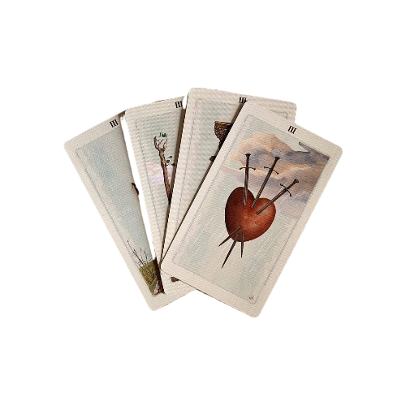

Stuff
Under Construction
21/09/26 Changed front page layout to one from 222.
15/09/2026 Added my first layout, as well as a page to hold them all. Also added a guestbook link to the front page of the site.
04/09/26 New, simpler front page layout with an earthy colour scheme. Fixed issues with git, uploaded an actual pages for my Emilie Autumn fansite, now called Blessed Night. Also added a link on front page this time so people can actually see it.